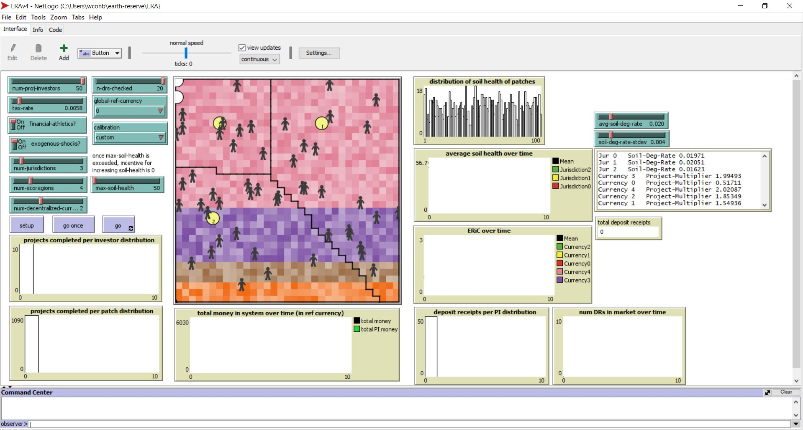
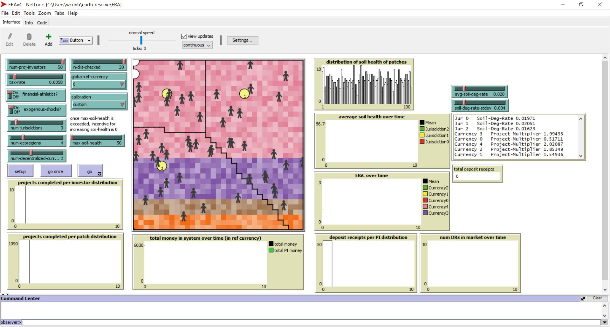

Projects
Earth Reserve Assurance (ERA) is a framework for the determination of monetary value and quantity in a multi-currency system with no central reference unit of account. The Earth is the warehouse for 200-year assurance of the capacity to produce primary commodities, verified with measures of ongoing change to ecological integrity and resource availability. ERA Operations Nodes, which are operated by central banks and decentralized autonomous organizations, would issue, buy and sell ERA Deposit Receipts. These are specialized financial instruments that are issued for verifiable deposits to the Earth Reserve.
Over Summer 2021, I worked with the Center for Connected Learning (CCL) and Xalgorithms on the ERA model within NetLogo. NetLogo is an agent-based modeling tool that specializes in building macro trends through agent interactions. This is particularly interesting as it applies to economics, where the sum of all microeconomics trends often does not correctly model the macroeconomic trend. I worked on updating the NetLogo implementation of the framework. The ERA NetLogo model is used as a teaching tool to help understand the functional dynamics, as well as an example of how the agents interact within the framework.
 

This is a dashboard created to visualize the data at the Olympics. It was created for the information visualization class where we learn how to intuitively display information to convey a message. The goal of this project was to tell a story about the history of the last 100 years through the data of the Olympics. In the image, we see that the USA has won very few medals, as they had boycotted this Olympics due to the Soviet invasion of Afghanistan.